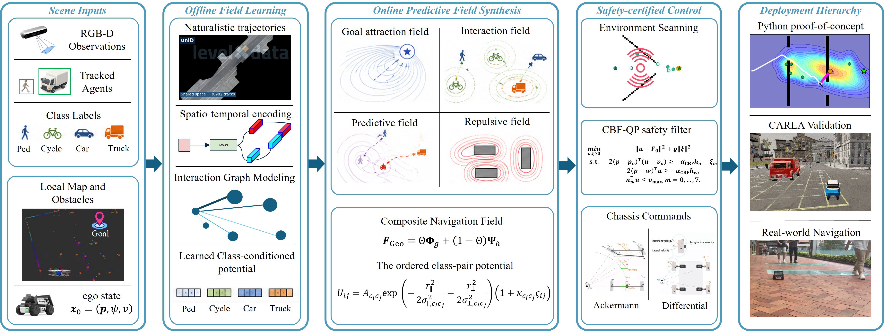
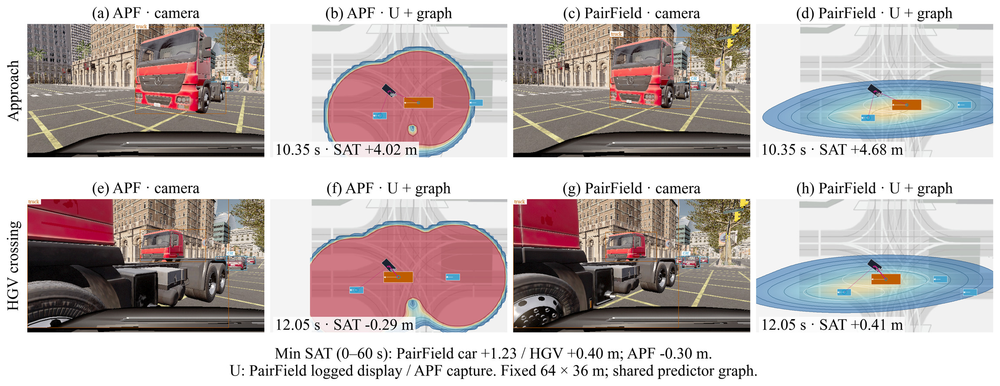
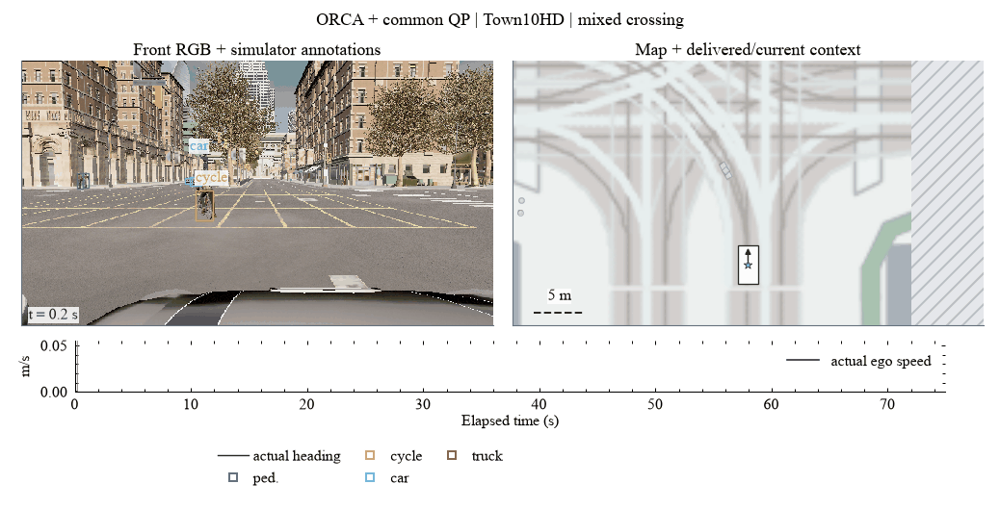
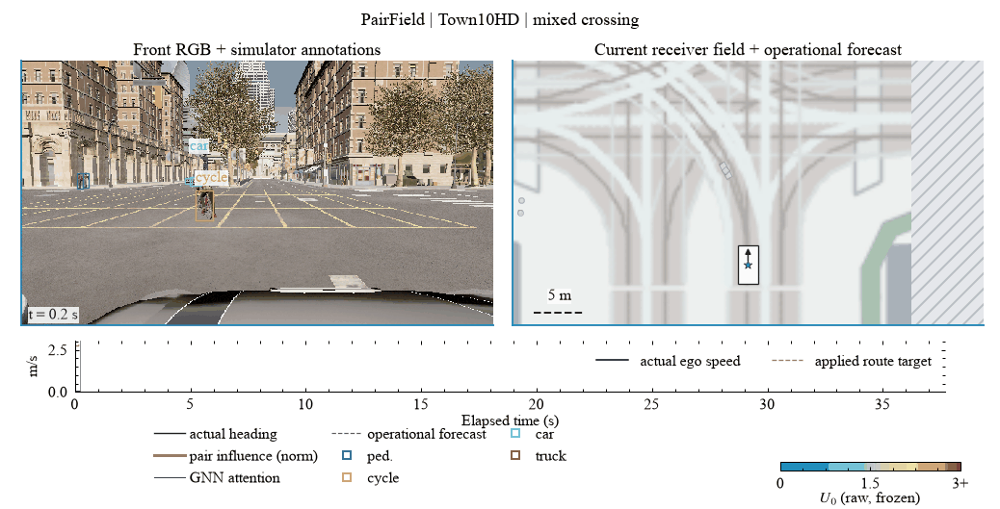
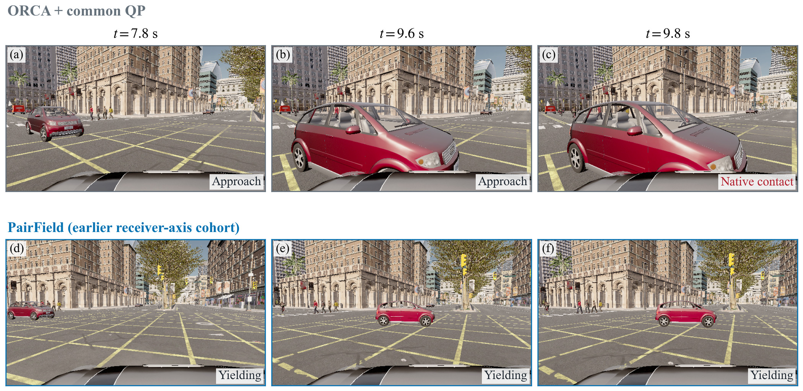
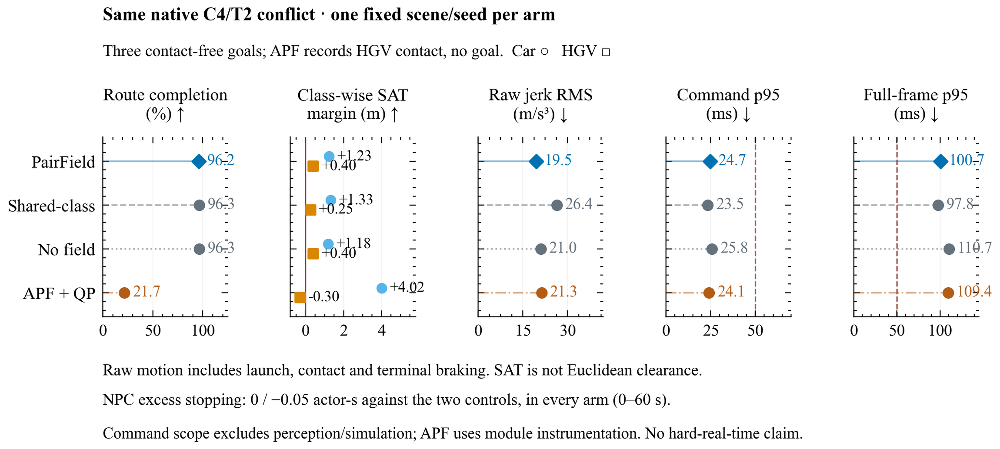
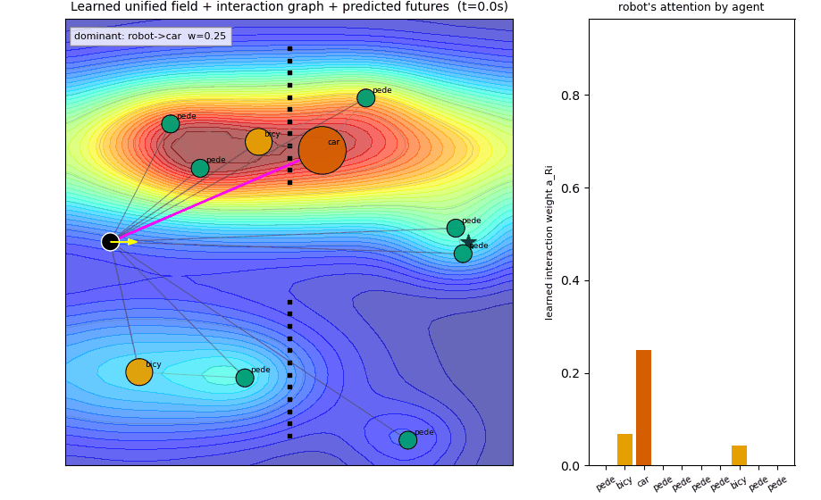
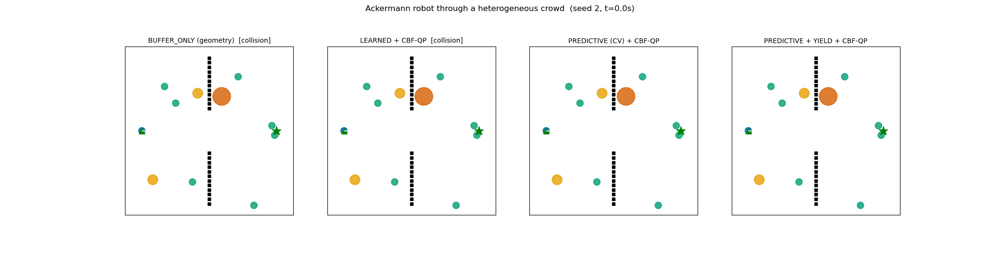
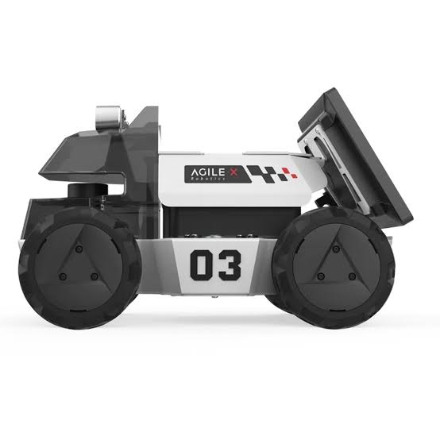

DREAM APF + common QP
HGV contact recordedContact near 12.1 s, at 21.7% route completion. The last recorded camera precedes the callback by one tick.
Social navigation · interaction fields · predictive control
Class-conditioned fields for
heterogeneous navigation
A shared interaction representation connects source-aligned fields to graph prediction and route-constrained control.
The repository contains a portable CARLA reproduction preview. The complete release will follow.
Navigation among pedestrians, cyclists and vehicles requires collision avoidance, considerate passing distances and efficient shared motion. PairField represents heterogeneous interactions with an ordered class-pair potential aligned to each source agent's body frame. Its gradient supplies features to a directed prediction graph and current/future navigation cues. A route-constrained interface and barrier-based filter connect these cues to physical tracking. Evaluation spans planar simulation, closed-loop CARLA recordings and a qualitative ROS 2/LIMO hardware adaptation.
Closed-loop CARLA
Replays pair the recorded camera with a fixed-scale map, logged interaction fields and graph edges.
Method
PairField learns an ordered receiver/source class-pair potential in each source body's coordinate frame. Its longitudinal axis follows that agent's heading. The field gradient informs graph prediction and current navigation; predicted positions supply an anticipatory cue.
Road execution projects interaction cues onto the assigned route and regulates target speed within that route. A CBF-QP filters the shaped reference before tracking.

Matched comparison
Same fixture, source-body predictor, sensing interface and current/future QP. APF replaces the nominal interaction field.
Semantic LiDAR gates privileged simulator tracks. Camera boxes use native instance-mask annotations.
Contact near 12.1 s, at 21.7% route completion. The last recorded camera precedes the callback by one tick.
Goal at 40.60 s on the assigned route. The minimum actual-body SAT margin is 0.40 m.
Paired playback starts at the same elapsed time and retains each recording's native duration. DREAM APF uses its released 15 m radial influence region. Field colours represent method-specific potential units.

More interactions
Illustrative recordings vary prescribed traffic count and class mixture. Rosters describe the scenario's moving agents.
Current replays use a fixed 64 × 36 m BEV crop with no per-frame zoom. Distant actors can leave the display without leaving the controller's inputs.
Three pedestrians, one bicycle, one car and one truck. Contact-free goal at 31.90 s. The matched shared-class and no-field runs also finish without contact.
Six pedestrians, two bicycles and three cars. Contact-free goal at 33.25 s, with source-body fields and logged graph connections.
A numerical-development recording with a different seed and the same 6 / 2 / 3 roster; contact-free goal at 34.00 s.
A turning source car changes its body heading. The current field follows that measured orientation; the run reaches its goal without contact.
A contact-free 30.55 s goal with mixed road users; the closest interactions involve vehicles and a cyclist.
Three separately fitted systems share one fixture and seed. All reach contact-free goals. In the 9–20 s pedestrian encounter, Shared-class waits longer and leaves a larger gap; PairField and No field record the same additional NPC stopping. Cars and the truck remain distant in this pilot.
Dynamic APF adds measured source-body dimensions, heading and velocity to a compact potential. ADA and Gaussian substitute their own nominal fields within the shared prediction/control host. MA-DV2F supplies its analytical vector policy with a route/QP adapter. All views keep a fixed 64 × 36 m scale and native 20 Hz cadence.
Contact-free goal at 31.75 s. Additional NPC stopping ties PairField at 0.55 actor-s. Compact fields follow source headings; the graph belongs to the shared predictor.
Contact-free goal at 31.35 s. The display uses ADA's recorded nominal risk field and the common predictor's logged graph.
Contact-free goal at 31.65 s. This declared source-frame adaptation rotates the Gaussian field with measured source headings.
Contact-free goal at 32.60 s. BEV shows the policy's native analytical direction components and interaction edges.
Potential ranges are fixed per method: Dynamic APF 0–2; ADA/Gaussian 0–6. Settings are fixed development configurations. Dynamic APF matched readout · MA-DV2F source.
Earlier receiver-axis V5.1 recordings retain native 20 Hz capture and fixed-scale BEV. Gray tiles mark completed recordings. These capture-only examples form a separate set from the 72-episode study.
Both finish without contact. ORCA's closest corrected body margin to the cyclist is 0.23 m; PairField's is 2.41 m. Goal times: 36.10 / 38.95 s.
SFM completes 29.36% of the route within 75 s; PairField reaches its goal at 36.00 s. Both recordings have zero native contacts.
Town10HD, seven agents: four pedestrians, one bicycle and two cars. ORCA records pedestrian contact and does not finish within 75 s; the matched historical PairField run finishes at 37.70 s without contact. Complete-run replays sample native 5 Hz camera captures at 2 Hz.


This still illustration uses a different earlier receiver-axis controller. It is separate from the source-body comparisons and the 72-episode density cohort.

Results
The historical density study shows lower overall proximity exposure alongside contact-free progress. The current pilot measures surrounding traffic's response to the ego.
| Method | Contact-free goals (out of 6 per load) | Proximity index ↓ (×1000) |
|---|---|---|
| ORCA + QP | 3 / 2 | 41.825 / 27.290 |
| SFM + QP | 6 / 3 | 6.808 / 24.461 |
| Geometry + QP | 3 / 2 | 35.491 / 32.079 |
| Class-label ablation | 6 / 6 | 3.687 / 5.526 |
| Longitudinal interface off | 5 / 6 | 2.620 / 3.094 |
| PairField | 6 / 5 | 2.805 / 4.843 |
Two towns, three seeds; D1 has 7 agents and D2 has 11. PairField has lower total proximity exposure than ORCA and Geometry in 12/12 matched cases and SFM in 11/12. At high load, several comparison arms have lower pedestrian exposure. All episode and class-wise values.
| System | Goal (s) | Min. pedestrian SAT (m) | Extra NPC stopping ↓ (actor-s) |
|---|---|---|---|
| PairField | 31.90 | 1.242 | +0.55 |
| Shared-class | 34.10 | 1.866 | +2.70 |
| No field | 31.75 | 1.362 | +0.55 |
PairField and No field induce the same additional NPC stopping; Shared-class leaves a larger minimum gap and waits longer. Stopping is summed over 0–20 s against two matched absent-ego controls. NPC contrasts.
Proximity index: actor-time-normalized exponential exposure to signed body SAT margin, with 1 m scale; cells show the median episode index at each load. NPC stopping measures simulator traffic response. These complementary proxies follow the evaluation categories in social-navigation evaluation guidance. Definitions and full measurements.
| Nominal field | Goal (s) | Native contacts | Raw jerk RMS (m/s³) | Command p95 (ms) |
|---|---|---|---|---|
| DREAM APF | 32.50 | 0 | 17.65 | 26.14 |
| DREAM ADA scalar-gradient | 31.35 | 0 | 18.08 | 27.62 |
| Source-body Gaussian | 31.65 | 0 | 17.09 | 28.52 |
| PairField | 31.40 | 0 | 17.17 | 27.00 |
Development settings use a common bounded longitudinal cue map. Field modules substitute the nominal cue within the shared host. Raw jerk includes launch and observed stopping; command timing includes controller-to-command work. DREAM sources · Recorded values and method scope.

| Controller | Goal / contacts | Route (%) | Min. car / HGV SAT (m) | Raw jerk RMS / peak (m/s³) | Command p95 / max (ms) | Calls > 50 ms |
|---|---|---|---|---|---|---|
| PairField | Yes / 0 | 96.20 | 1.23 / 0.40 | 19.47 / 324.52 | 24.68 / 525.63 | 5 / 813 |
| Shared-class | Yes / 0 | 96.27 | 1.33 / 0.25 | 26.42 / 402.81 | 23.46 / 120.42 | 3 / 870 |
| No field | Yes / 0 | 96.29 | 1.18 / 0.40 | 20.97 / 324.54 | 25.76 / 114.79 | 3 / 808 |
| APF + common QP | No / 1 | 21.75 | 4.02 / −0.30 | 21.26 / 136.62 | 24.10 / 85.21 | 1 / 242 |
Raw jerk includes launch and observed stopping. Durations are 41.25 / 44.10 / 41.00 / 12.25 s; the APF run ends at contact. Command timing excludes upstream sensing/simulation. Whole-frame p95: 100.67 / 97.78 / 110.70 / 109.38 ms.
Earlier receiver-axis V5.1: 12 episodes per method, two towns, two loads, three seeds. D1: 4 pedestrians / 1 bicycle / 2 cars; D2: 6 / 2 / 3.
| Historical controller | Contact-free goals D1 / D2 (out of 6 each) | Contact / non-goal runs | Mean route (%) | Median SAT (m) | Median proximity (actor-s) | Median smoothed jerk (m/s³) | Median command p95 (ms) |
|---|---|---|---|---|---|---|---|
| ORCA + QP | 3 / 2 | 2 / 7 | 61.0 | 0.41 | 21.63 | 5.05 | 5.45 |
| SFM + QP | 6 / 3 | 0 / 3 | 81.1 | 0.53 | 2.67 | 8.14 | 5.18 |
| Geometry + QP | 3 / 2 | 0 / 7 | 60.3 | 0.61 | 25.24 | 4.73 | 5.28 |
| Class-label ablation | 6 / 6 | 0 / 0 | 96.2 | 1.27 | 1.64 | 7.09 | 14.18 |
| PairField w/o longitudinal interface | 5 / 6 | 1 / 0 | 96.2 | 1.39 | 1.08 | 8.40 | 14.08 |
| PairField | 6 / 5 | 1 / 0 | 96.2 | 1.24 | 1.23 | 7.99 | 14.09 |
Contact and non-goal counts can overlap. Continuous cells summarize episodes. Historical jerk uses a fixed 0.25 s velocity mean; current raw jerk uses the native signal. Class-label ablation changes neighbour labels to cars with fixed weights. Episode records.
The simpler simulator exposes fields and graph interactions directly. CARLA adds simulated sensing, native traffic response and physical tracking.


The ROS 2/LIMO adaptation connects onboard observations to bounded differential-drive commands using an exported class-pair field and optional constant-velocity anticipation.

The ROS 2 bridge uses odometry, LaserScan geometry and tracked agents in the local frame. An exported class-pair field, optional constant-velocity anticipation, speed governor and soft dynamic-agent / hard static-obstacle QP produce bounded Twist commands for the observed differential-drive configuration.
PairField
Goal 31.90 s · no contactPedestrian encounter: minimum SAT margin 1.242 m. Additional NPC stopping over 0–20 s: 0.55 actor-s.
Shared-class
Goal 34.10 s · no contactPedestrian encounter: minimum SAT margin 1.866 m, with 3.35 s ego stopping. Additional NPC stopping: 2.70 actor-s.
No field
Goal 31.75 s · no contactPedestrian encounter: minimum SAT margin 1.362 m. Additional NPC stopping is also 0.55 actor-s; the logged interaction field is zero.